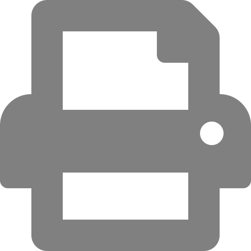

CS 3710
Introduction to Cybersecurity
Aaron Bloomfield (aaron@virginia.edu)
@github | ↑ | 
Ethics
Sources
Much of the material in this slide set came from An Introduction to Cybersecurity Ethics, a free online cybersecurity ethics module provided by the Markkula Center for Applied Ethics at Santa Clara University
Ethical Questions
Question 1: What if Google were out to get you?
- Imagine that you were the mortal enemy of Larry Page or Sergey Brin
- The founders of Google
- How much damage could they do to you?
- Control the information that you see?
- How much does Google know about you?
- How much access to your private digital life does Google have, beyond Gmail?
- There are few laws that regulate any of this!
Question 1: What if Google were out to get you?
- So why doesn’t Google do this?
- Well, Brin and Page are not evil (although this is debated: 1, 2, 3, etc.)
- Actually, they do do some of these things in other countries
- Beyond not being evil, few people would use their services if they were known to do these things
Question 2: Trolley Problem

- You see a run-away trolley moving toward five tied-up people lying on the tracks
- You are next to a lever that controls a switch
- If you pull the lever, the trolley will be redirected onto a side track and the five people on the main track will be saved
Question 2: Trolley Problem
- However, there is a single person lying on the side track
- Option 1: Do nothing and allow the trolley to kill the five people on the main track
- Option 2: Pull the lever, diverting the trolley onto the side track where it will kill one person
- Which is the most ethical option?
Is the Trolley problem realistic?
- Imagine you are writing self driving car software
- The car, which has one passenger, is about to run over five people
- It could continue straight, and kill those people
- Or it could swerve and likely kill the “driver”
- This is the modern version of the trolley problem
- Yes, this means your car could be programmed to kill you in the right circumstance…
- A study was even done on this…
Question 3: Another variation
- Imagine you somehow knew that an individual would inadvertently kill another person
- Would you kill them to prevent this?
- Assume that nobody would have this foreknowledge, and you would be branded a murderer
- What if the person would inadvertently kill 5 others? 10? 100? A million?
- What if this were inadvertent?
- Meaning the individual would murder those other(s) by non-negligent accident
Question 4: FBI & Apple Encryption Dispute
- The 2 who caused the 2015 San Bernardino attack that killed 14 used encryption on their iPhone 5C
- The FBI was unable to crack it at the time
- The FBI ordered Apple to write a program to crack it, but Apple refused
- It could allow mass surveillance and persecution of others
- Especially if it leaked out of US control
- It could allow mass surveillance and persecution of others
- Apple refused, citing privacy and ethics
- This is the FBI-Apple encryption dispute
Question 4: FBI & Apple Encryption Dispute
- What were Apple’s ethical requirements?
- While one can agree or disagree with Apple, there are definitely arguments on both sides
- Ultimately, it was discovered that one can hack into these phones via booting it through the USB port
- This “feature” has been removed on more recent iPhones
- However, Apple’s appeal to public more about protecting market share than privacy, says UAlberta ethics professor
Question 5: Gov’t Leaks
- Are leaks from within the government unethical?
- Such as leaks from within the White House, etc.
- Consider how partisan of a world we live in…
- For members of the same party as the president:
- Yes, they are unethical! Those perpetrators should be caught and thrown in jail!
- For members of the opposite party as the president:
- No, they are not! They are revealing what an awful regime is running the country!
- This has happened to previous administrations as well, to varying degrees
Lessons Learned
- Question 1: Google
- Companies with a lot of power can do greater damage with unethical choices
- Question 2: Trolley
- Not all of these have correct answers (or even widely accepted answers)
- Question 3: Stopping a murderer
- All these questions have thresholds
Lessons Learned
- Question 4: FBI & Apple
- Allowing a “crack” on encryption can have unintended consequences
- Companies that state they are making the ethical choice may only be making the best financial choice
- Question 5:
- Reasonable people will have different views as to what is “ethical”
Ethical Issues
What is Ethics?
Ethics is a branch of philosophy that involves systematizing, defending, and recommending concepts of right and wrong conduct
the most important thing is not life, but the good life
- Socrates
Ethics helps stabilize society
- Obvious examples: don’t kill, don’t steal, etc.
- As a result, all major religions and societies have these rules
- Secular and sacred laws follow these ethics: don’t kill, don’t steal, etc.
- They help us live a “good life”, as per Socrates
- Separate from moral arguments, ethics is a matter of self-preservation
- Keep others from harming you
With Great Power Comes Great Responsibility

- Technology gives us great
power- To accomplish a lot,
to harm others
- To accomplish a lot,
- The quote is more likely
from the period of the
French Revolution
Technological Dependence
- We are increasingly becoming more dependent on technology
- If it were used in ways that could harm us, then that would have a much greater effect than it would have decades ago
Inability to keep up
- With the rapid change of technological advancement, it is not realistic to have laws force ethical behavior
- Lawmakers don’t understand technology
- Change is faster than laws can realistically be passed
- Poor law wording can have wide-ranging negative effects
- Thus, various organizations have their own ethics policies, including the ACM Code of Ethics and IEEE’s technological ethics division
Ethics and Cybersecurity
- Design of cybersecurity systems seeks to protect:
- Integrity
- Functionality
- Reliability
- Etc.
- As designers, we want to ensure that we are designing systems that:
- Are as safe as possible
- Do not have intentional backdoors or means for improper surveillance
How can harm result?
- Beyond intentional backdoors and such…
- From poor programming or deliberate unethical choices
- Note that the poor design choices are considered unethical when people depend on the system in some way
- People have gone to jail for poor design of systems, both computer and otherwise, in these situations
- Can you go to jail for coding?
How can harm result?
- Can you go to jail for coding?
- Note that this is poor programming to the point of being negligent
- Not just a coding mistake
- However, it is ethical to ensure that your system works via tests and testing suites
Ethical Issues in Cybersecurity
- Harm to privacy
- Harm to property
- Cybersecurity costs
- Transparency and disclosure
- Roles, duties, and interests
Harm to privacy
- Beyond just embarrassment at your porn viewing history, that is…
- Consider:
- Identity theft, including financial account theft
- The most common of these, since there is money to be obtained through this
- Social ostracisation
- Blackmail
- Extortion
- Theft of state secrets
- Identity theft, including financial account theft
Harm to property
- Loss of funds from a financial account
- Perhaps digital property (loss of data)
- Some machines can be damaged via malware; this happened as early as 1999 via the Chernobyl virus
- Connected weapon systems can damage property (and people!)
- Think of Skynet from the Terminator franchise
- Luckily not many exist (yet)…
Cybersecurity costs
- Too much security, and the system becomes unusable
- Consider a system that needs to be accessed quickly: emergency response systems
- Too little, and the system is too insecure
- This decision is an ethical one, balancing between these two factors
- Companies hire business ethicists for this purpose
- There is no one-size-fits-all correct answer to this!
Transparency and disclosure
- If a vulnerability is found, how soon to notify?
- Perhaps not all that soon if it’s hard to find, or if no patch yet exists
- Otherwise, notify right away
- This decision is an ethical one, balancing between these two factors
- There is no one-size-fits-all correct answer to this!
Roles, duties, and interests
- Consider conflicts of interest:
- Wanting to release an encryption vulnerability to help promote a better algorithm
- Hiring an ethically deficient person to try to turn them to the light side of the Force
- Are these ethically allowed?
- This decision is an ethical one, balancing between these two factors
- There is no one-size-fits-all correct answer to this!
Public Obligations
Legal Responsibility
- Outside of cybersecurity…
- If you see somebody that is dying, and you have the ability to save them, are you legally required to help?
- We are ignoring moral or ethical concerns here…
- The answer is no, unless you have a legal responsibility to act (on duty lifeguard, on duty police officer, etc.)
Legal Responsibility
- What about within a computational context?
- As the quality of the code that we write can have consequences on things of value…
- money, privacy, lives, etc…
- …we do, in fact, have an ethical responsibility to act
- Here ‘to act’ means do a sufficient job and ensure the quality of our code
- But there is limited legal responsibility
- Mostly due to the laws not keeping up
- This excludes outright negligence, though
The Public Good
- Cybersecurity professionals certainly serve the public good:
- Help create cryptosystems to secure data
- Ensure safety of online systems
- Protect privacy
- Etc.
Affecting the public…
(courtesy of Mark Sherriff’s CS 3240 slides; direct link is here)
Stakeholders
- There are many stakeholders involved, but the primary ones are:
- The users of the system, who want it to be secure
- The entity paying for the development, who wants to keep costs down
- These create conflicting goals: security versus low cost
- It is a balancing act to find the right balance between the two
Ethical Frameworks
So where are we?
- We can assume that we now understand the issues involved, who the public is, the stakeholders, etc.
- How, then, do we make ethical decisions?
- There are no clear guidelines for how to balance these things
So where are we?
- We’ll have to make decisions on a case-by-case basis
- We see four frameworks to help us make these decisions
- Virtue Ethics
- Consequentialist Ethics
- Utilitarian Ethics
- Deontological ethics
Virtue Ethics
- Rather than right or wrong…
- Or good actions and bad actions…
- …this focuses on what a virtuous person would do
- So what would a ‘morally excellent person’ do?
- Examples: habit of moderation, virtue of prudence, practical wisdom, etc.
- This is a thought experiment to be considered
Virtue Ethics
- How does this help?
- Three ways:
- Help us understand if we have a moral and ethical obligation, and if so, then to who
- Help us determine which (moral and ethical) standards to follow
- Helps us cultivate practical wisdom and good judgment
Virtue Ethics
- These can be culturally relative
- Consider a benign example of this cultural relativity:
- Aristotle proposed nine important virtues: wisdom, prudence, justice, fortitude, courage, liberality, magnificence, magnanimity, and temperance
- A modern ethicist proposed four: ambition/humility, love, courage, and honesty
Virtue Ethics
- These can be culturally relative
- Consider a non-benign example of this cultural relativity:
- Sexism or racism: in the past, this was accepted as an accepted part of society
- Think of societies where slavery exists, or women are second-class citizens
- They exist today! They are not all in the past!
- Sexism or racism: in the past, this was accepted as an accepted part of society
Consequentialist Ethics
- Consider what the consequences of our actions will be
- Also called Consequentialism
- “A morally right action is one that will produce a good outcome or consequence”
- Do the ends justify the means?
- An extreme interpretation of Consequentialism
- Like how terrorism is an extreme interpretation of religion
Utilitarian ethics
- Consider what the ‘greatest good’ is
- Here, ‘good’ is happiness, pleasure, or absence of pain (emotional, physical, etc.)
- Many utilitarians believe that a society that maximizes individual rights and justice leads to the greatest common good (in the long run)
Utilitarian ethics
Utilitarian ethics
- Would an action that hurt one person but helped society be valid ethically?
- Consider eminent domain seizure of property to build a highway
- What if it were a great injustice to an individual?
- All these frameworks can be abused in the extreme
Deontological ethics
- A rule-based or principle-based system
- Some set of rules or principles inform us of our moral obligations
- Examples:
- The ten commandments of the Abrahamic religions
- A set of (secular) laws in a modern society
- The idea of universal human rights
- Kant’s Categorical imperative
- Only act in a way that everybody else should act
Deontological ethics
- But what if the laws are immoral?
- Again, consider societies where slavery or sexism exists
- Or other forms of discrimination
- Again, consider societies where slavery or sexism exists
Abuses of ethical frameworks
- All these frameworks can be abused in the extreme
- Virtue ethics: can be culturally relative
- Consequentialist ethics: do the ends justify the means?
- Utilitarian ethics: sacrifice one individual’s rights for the good of the many
- Deontological ethics: what if the laws are immoral?
How to proceed
- Consider multiple frameworks
- An abuse of one framework is likely not permissible in another framework
- These things will take time to figure out!
Best Practices
Cybersecurity, not compliance
- Keep Cybersecurity Ethics in the Spotlight – and Out of the Compliance Box
- Don’t think of ethics as a compliance issue
- Instead, make these decisions an integral part of what you do
- Compliance indicates following the legal framework, which often does not keep up
- It is often that what is legal is unethical
- Less often, what is ethical is illegal
Consider interests involved
- Consider the Human Lives and Interests Behind the Systems
- It’s easy to forget that there are actual people affected by our work
- Especially with cybersecurity issues
Consider associated risks
- Consider Downstream (and Upstream and Lateral) Risks in Cybersecurity Practice
- After we are done with something, there may still be ethical issues involved
- Does a poor design cause people to not have reasonable security?
- This is an ethical basis for forced OS updates
- Somebody patched the vulnerability, but that doesn’t mean the work is done
- Downstream users may not patch in time, hence the forced update
Understand the other side
- Don’t Discount Non-Technical Actors, Interests, Expectations, and Exposures
- We are computer experts, and are unlikely to fall for, say, a phishing attempt
- But non-experts will, so have your mail software attempt to block them
- Consider Microsoft’s (mostly previous) habit of blaming the victim when malware occurs because patches weren’t installed
- Some users don’t even know what a patch is!
Responsibility & Accountability
- Establish Chains of Ethical Responsibility and Accountability
- Who is responsible for ensuring ethical issues?
- This is the entity who should do it right in the first place
- Who is accountable for ensuring ethical issues?
- This is the entity that ensures that rules and ethics are followed
- Needs to have some authority over those responsible
Disaster planning
- Practice Cybersecurity Disaster Planning and Crisis Response
- Anticipate failure – it’s going to happen
- Plan for a disaster, so if one happens, you will be prepared
- Disaster planning also helps you:
- Mitigate risks
- Think critically about vulnerabilities
- Disaster planning also helps you:
Promote Values of Transparency Autonomy, and Trustworthiness
- Transparency allows the customers to know what is going on, and decide for themselves their risk tolerance
- It also creates a more trusting environment with the customers
- Delays may be reasonable in many circumstances
- Such as waiting for a patch to be rolled out
Consider Disparate Interests, Resources, and Impacts
- Understand the trade-offs involved
- Consider encryption: it will help many, including criminals; it will hinder evildoers, but also police
- An ethical dilemma for sure, with no concrete answer
- Consider allowing only those paying more to have the better security features
- Ethically wrong, since you are hurting those with less financial resources
- Consider encryption: it will help many, including criminals; it will hinder evildoers, but also police
Invite Diverse Stakeholder Input
- A diverse set of individuals will help generate better ideas
- A homogeneous group may often have similar ideas
- Which will hinder “thinking outside the box”, which is critical to the security mindset
- It also hinders seeing things from a wider range of customers
Design for Privacy and Security
- Design with security and privacy in mind from the beginning
- Don’t treat security and privacy as an afterthought!
Make Ethical Reflection & Practice Standard, Pervasive, Iterative, and Rewarding
- Analyzing one’s success and mistakes is critical to learning from the experience
- This applies to ethical decisions made as well!
- “Learn” here means both increasing wisdom as well as improving institutional practices
- Don’t penalize for this; instead, encourage and reward this type of reflection
Model and Advocate for Ethical Cybersecurity Practice
- Keep on top of ethics in practice
- New ethical frameworks, new best practices, new legal guidelines, etc.
- Encourage business relationships with those who are more experienced in these areas
- Both good to learn from and good to bounce ideas off of